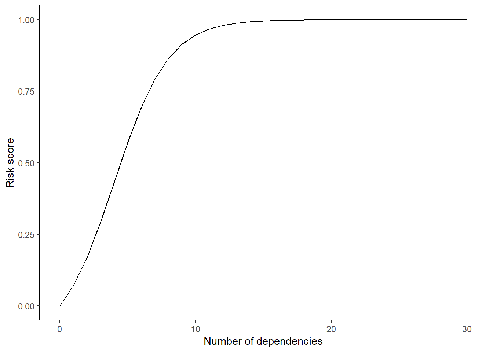

Warning: package 'ggplot2' was built under R version 4.3.2

This document describes the metrics used by members of the Swiss Clinical Trial Organization when evaluating add on packages of the statistical environment, R. It provides a table of the metrics and a short explanation of the considerations behind each of the metrics.
Assessing the risk associated with using a software package is one of the steps required for working under a validated environment, as determined in the SCTO R-validation policy. The risk of (using) a package is the opposite of the confidence we have in the package’s delivered output: packages which we are confident in using are of low risk, and vice versa. The metrics described below are the building stones in determining this risk. A final risk score is determined based on a weighting scheme including these metrics.
Following this assessment, the assessor determines whether any parts of the package need to be tested (function/unit testing) for the package’s intended use in a specific product. The documentation of any actions following the initial risk assessment is listed in a separate table.
This document is part of the SCTO’s R validation policy (NAME – LOCATION – VERSION) and refers to the standard operation procedure for Package Testing (NAME – LOCATION) of the SCTO statistics platform.
The metrics are written with the aim of assessing R packages; small adaptations may be required for packages of other programs such as Stata or SAS.
Based on the principals below, the table in the addendum provides the metrics’ values to be documented upon package evaluation for the SCTO platform statistics. Note that the evaluation is per package with a specific version number. Package version changes and updates require re-assessment of the metrics for the new version.
This document is applicable to all R add-on packages. Out of scope are packages included in the official R-distribution including “Base R” packages. Also out of scope is the collection of “recommended packages”, developed and validated by members of the R Development Core Team, as listed in the document “R: Regulatory Compliance and Validation Issues, The R Foundation for Statistical Computing, 2021”. R-base and recommended packages are approved per definition, as stated in the policy document.
The following metrics are considered when assessing a package. These are listed in Appendix-1 below. Here we provide a precise definition:
version and release date of the specific version assessed at this moment. These are required for identifying the package and for documentation. Packages will be re-assessed upon update and version changes; documentation of older versions remains in the document. These values are not included in the risk calculation.
statistical_package):We define three risk levels for a package, depending on the package’s purpose and methodology:
“non-statistical” packages: packages that deal only with data-wrangling and manipulation (e.g., dplyr) or with reporting processes (e.g., Sweave, xtable). Such processes are of ‘low risk’ as no statistical calculations are performed, and data-errors are, comparatively, easy to detect. Similarly, packages associated with application interfaces such as Shiny application are considered “non-statistical”.
“Statistical with published methods”: packages that perform statistical calculations based on known methods, or on methods that have been published in peer reviewed journals. These packages obtain a “medium risk” status.
“Statistical non-published methods”: packages that perform statistical calculations, but the underlying methods have not been published in a peer reviewed journal. These packages obtain a status “high risk”.
author):The author(s) of a package will be viewed as indicator for its trustworthiness. If package authors (noted as ‘aut’ in the package description, e.g., as listed on CRAN) are well-known within the statistical, data-science and R communities and have credentials based on their qualifications, education, present and past affiliations, the risk of the respective package will be scored as low. If package authors have credentials based on their qualifications, education, present and past affiliations, but are not well-known within the statistical, data-science and R communities, the risk of the respective package will be scored as medium. If package authors are not well-known within the statistical, data-science and R communities and have no clear credentials based on their qualifications, education, present and past affiliations, the risk of the respective package will be scored as high.
Note that whether an author is ‘well-known’ in the community is a subjective assessment and accepted as such; in addition, groups of authors are evaluated as a collective.
maintainer) :The package has a named maintainer who’s contact details (email) are available and published. A positive answer provides a “low risk” score. A package with no named maintainer is scored as high. The rationale behind this metric lies in the fact that the indication of name and email is evidence of a package’s active maintenance and availability of contact in case of bugs and/or suggestions.
nr_dependencies):This metric assesses the level of risk associated with the number of dependencies a package relies on. Dependencies are other packages or processes that the evaluated package depends on, as listed in CRAN under “depends” and/or “imports”. The risk of unexpected behaviour increases with the number of dependencies, since there is a greater likelihood of issues on a specific routine if updates are performed on a dependent package. Great care should be considered while using packages involving many dependencies.
The listed number is converted into a [0, 1] score, with 0 representing low number of dependencies (= low risk) and 1 representing many dependencies (= high risk). Taking a similar approach for the transforming the number to a score as the ‘riskmetric’ package (R validation hub, 2023), we use a simplification of the classic logistic curve as a scoring function. A sigmoid midpoint is 4 reverse dependencies, ie., x[0] = 4 and logistic growth rate of k = 0.5.
Warning: package 'ggplot2' was built under R version 4.3.2ETC.